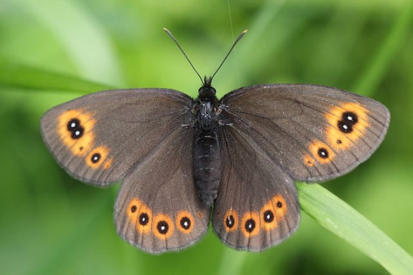

Mariposa Erebia christi
Erebia christi: El tesoro escondido de los Alpes
La Erebia christi (conocida comúnmente como el rizo de Raetzer) es una de las mariposas más raras, escasas y protegidas de Europa. Su vida transcurre en un área geográfica tan pequeña que se considera una auténtica joya biológica.

¿Dónde habita? Un endemismo alpino extremo
Esta especie no migra y no existe en ningún otro lugar del planeta. Su distribución se limita estrictamente a una pequeña franja de los Alpes centro-occidentales:Suiza: Principalmente en el valle de Laggintal y la zona del Paso del Simplón (Cantón del Valais).Italia: Poblaciones muy localizadas en la región colindante de Piamonte.Altitud: Vive en laderas rocosas, desfiladeros empinados y praderas verticales entre los 1,300 y 2,100 metros de altura. Se estima que solo existen entre 6 y 7 poblaciones aisladas en todo el mundo.
¿Cómo identificarla?
A simple vista puede confundirse con otros miembros de su género, pero se identifica por tres rasgos clave:
- Los ocelos alineados: Presenta una fila casi perfectamente recta de 3 o 4 puntos negros con centro blanco en sus alas anteriores. En otras mariposas similares, esta fila es curva o irregular.
- El reverso de las alas: El lado inferior de las alas traseras muestra bandas grises y marrones muy contrastadas en los machos, y tonos más amarillentos en las hembras.
- Tamaño en vuelo: Es ligeramente más grande y tiene un vuelo más robusto que las demás especies de Erebia que comparten su hábitat.
Ciclo de vida y supervivencia extrema
Las duras condiciones del invierno alpino obligan a esta mariposa a tener un desarrollo inusualmente lento:
- Alimentación: Las orugas se alimentan exclusivamente de plantas gramíneas específicas, principalmente del género Festuca (como Festuca ovina) que crecen en las grietas de las rocas.
- Ciclo de dos años: La larva necesita pasar dos inviernos completos congelada bajo la nieve antes de poder transformarse en crisálida.
- Breve vida adulta: Los adultos emergen únicamente entre finales de junio y mediados de julio. Vuelan solo en días soleados para buscar néctar en flores silvestres como el tomillo y el orégano.
Amenazas y estado de conservación
Está catalogada como Vulnerable (VU) en la Lista Roja de la UICN. Al vivir en un territorio tan reducido, es extremadamente frágil ante:
- El cambio climático: El aumento de las temperaturas reduce las zonas frías de alta montaña que necesita para sobrevivir.
- Destrucción de hábitat: La construcción de carreteras o infraestructuras turísticas en los pasos alpinos.
- Protección legal: Está estrictamente protegida por el Convenio de Berna y la Directiva de Hábitats de la Unión Europea. Su captura, colección o comercio está totalmente prohibido.
mas informacion..
ir a mariposa zerynthia..